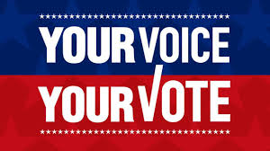
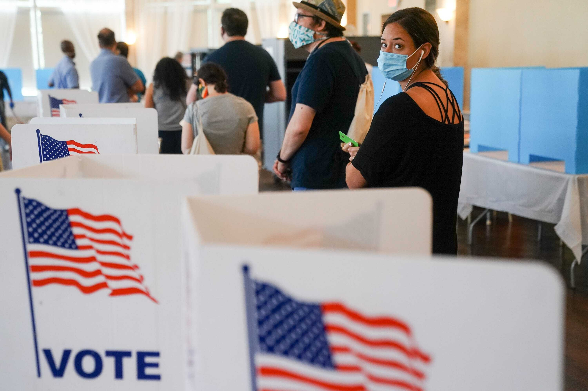

Election Day In Person Voting
Below will be tips and information for North Carolina voters who will choose to vote in person on election day.
Election Day is Tuesday, November 3, 2020. Voters who are registered in the state of North Carolina will be able to vote at their assigned polling place.
On election day polling places will be open from 6:30 a.m. until 7:30 p.m. Don't worry if you are in line and have not voted passed the closing time of the polling place. As long as you are in line before 7:30 p.m. you will still be able to vote. Peak times for long lines at polling places tend to be in the morning and just before closing. If you are unaware of your polling place you can find out here!
Voting and Coronavirus
The state of North Carolina, among other states, have taken various precautions to make sure your vote is safe as well as you.
Safeguards that have been put in place to ensure you are protected from COVID-19 include:
- Enforcing social distancing at polling places and early voting sites
- Providing hand sanitizer and masks for voters and election workers who do not bring their own
- Providing gloves and face shields for election workers
- Erecting barriers between election workers and voters at check-in tables
- Providing single-use pens in counties that use hand-marked paper ballots, and a cotton swab or disposable stylus for voters who use ballot-marking devices
- Frequently cleaning surfaces and equipment in polling places and early voting sites
- Recruiting poll workers who are less vulnerable to the virus